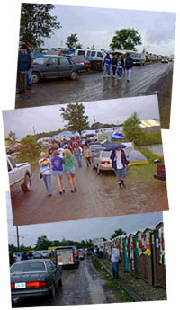
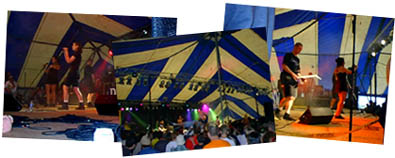
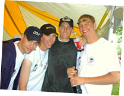
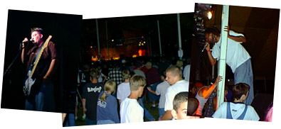

|
 |
 |
| Cornerstone: Welcome!
Day 2: Digging In
It's more than a music party -- Tucked behind the underground tent is Cornerstone's ArtRageous and Imaginarium exhibits. Authors, painters, and others of a creative bent can enjoy conferences, discussion, and great coffee. The midnight film festival was cool, too...
So much music, so little time... Sob! Here's a peek at some of the cool stuff I stumbled across over the course of the festival. Some oldies and some fresh stuff -- no matter what the genre, it's hot stuff.
Follow the adventures of Squeaky the Duck on his adventures at the fest. From his near-death experience at the hands of Kevin131 to a DC Talk sighting, he's been almost everywhere.
Well, T-shirts, too. Cornerstone is a great place to find a variety of wacky hairstyles, and most of the owners are good natured sorts who're quite willing to offer their coifs for a good cause -- this page, for one!
What do you get when you put a bunch of music-obsessed usenet junkies in one place? Vibrating hairrushes. That's what. The fourth annual RMC Cornerstone picnic is here, captured in bits and bytes for all of posterity...
Whether it's beating the heat, finding munchies, or selecting that perfect camping site, there's someone who's been through it and has some words of wisdom to offer. Recorded here for posterity are essential Cornerstone survival skills.
|

Day two: Rain. That's right; after the glorious weather on Wednesday, Murphy's law struck, and everyone remembered the mud-pits of '95. Hopefully, things wouldn't come to that... Still, the downpour promised to make things slushy for a while. Driving through Bushnell on our way to the fest that morning, Jason and I were struck by the outpouring of warmth and affection that the city lavishes on Cornerstone. Signs were everywhere welcoming us, wishing us well... Imagine thousands of punks, goths, ravers, youth group leaders, metalheads, and assorted music fans invading a small midwestern town, and it's obvious why it's so ironic. Garage sales were everywhere -- there were ten times more customers than the city usually enjoys! Later in the day, heading back to the Sub*Lime records trailer for a respite from the rain, I stumbled across the crew from Grey Dot Records busily unpacking boxes of squeaky-clean CDs. Woohoo! I'd met them at last year's fest, when they were wandering the crowds wearing "Ask Me For a Free CD!" T-shirts. One of their releases, Happy Now? by Loudflower, made it to my list of great Cornerstone finds. Good stuff! Wandering across the expanse of the farm, digital camera in hand, I stopped into one of the larger tents closer to the parking lot. Lo! Aleixa, the industrial pop-gothic dance team, was in the middle of a killer set. Last year, I'd camped out with my camcorder and captured most of the concert on film from a distance. This time, I got brave and jostled my way to the stage to snap some stills. April, Aleixa's long-lost original vocalist, was with Kevin and Laurel again for this Cornerstone show and the results were very spiffy. After the concert I made it back to their table in the exhibition tent to find out some details on their upcoming release.  Jason snagged a copy of a demo tape that Kevin and Company were distributing, with one of the cuts from the new CD and an exclusive Aleixa-style remix of a Duran Duran song. Woohoo! We bounced around to it when we headed back to the car for refreshments and decided that old music can become cool again. I checked out the press tent, and four MxPx (Magnified Plaid, or so they say) in the middle of an interview. Near the back of the crowd I bumped into a cool gang of guys wearing Dr. Who and Dr. Jekyl t-shirts. On striking up a conversations I found out they'd made it all the way from Canada. Woohoo! The main attraction Thursday night was the dance tent, hosted by N*Soul records. On the lineup for the late night show was none other than The Echoing Green, a synthpop extraviganza from New Mexico. Joey Belville, The Echoing Green's core musician, has been called The Nicest Guy in Christian Music, and his tunes are great to bounce to. His latest CD, Hope Springs Eternal, marked a musical departure from pur synthpop with the addition of guitar work by Aleixa's Kevin 131. This was my first chance to see him in concert since its release, and I was looking forward to it... to say the least. I crowded in an hour early to be sure I had a good position once things started up. An ultra-cheesy dancy type person in a tutu was leading the crowd in some synth-based songs... Sort of a rave cheerleader. (Later crowd consensus revealed bewilderment. "Who was that woman?") Things started looking up fast, though, when Maxamillian -- one of N*Soul's new artists -- took the stage. More hip-hop than techno or dance, his music is good stuff... His live show, though, is positively amazing. Imagine a guy doing great beat loops, solid rhythms, and fun danceable songs with nothing but his mouth and a microphone. You're seeing Maxamilian. After the show, I stopped by the N*Soul booth and hatted with him for a while; cool guy, and his CD Deeper Than Most was a good deal, too. :-)  After Maxamilian got everybody bouncing, Joey took the stage and all the die-heard Echoing Green Fans commenced screaming and cheering. Hurray! I'd gotten up to the stage itself, and managed to get some nice shots as Joey and the band started in. Between songs (mostly numbers from the newest CD, Hope Springs Eternal) he gave the low-down on the Echoing Green's new contract with Sub Lime records, another group of green peope who make cool music. The new self-title Echoing Green CD should be coming out soon, and he's excited about the possibilities for it. Alas, the long-desired cover of Safety Dance wasn't performed. A lucky few heard it at True Tunes back in '95, but hey... now we can bug Joey about it all the time! After talking to Joey or a little whie, and hooking up with Cathy Naing, one of the cool RMC people in attendance, Jason and I drifted over towards the concession tents for snackable items and other wind-down stuff. At Cornerstone, the day starts at noon and ends when the sun comes up, but we had to drive back to the hotel... so conserving our energy was a must. Next year, camping! ;-) |
|
|
|